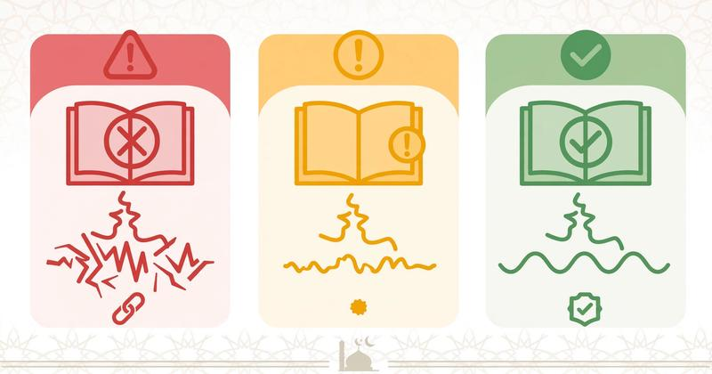

Lahn Jali and Lahn Khafi in Tajweed: Major & Minor Mistakes Guide [2026]

Lahn Jali and Lahn Khafi are the two types of mistakes in Quran recitation. Lahn Jali (clear mistake) changes meaning and is haram, while Lahn Khafi (hidden mistake) breaks Tajweed rules. If you studied what Tajweed is and why it is important and common Tajweed mistakes beginners make, you must understand Lahn to avoid it. This guide connects to Makharij Al Huruf, Sifat Al Huruf, and Tafkheem and Tarqeeq.
Table of Contents
- What is Lahn in Tajweed?
- Lahn Jali - Major Clear Mistakes (Haram)
- Lahn Khafi - Minor Hidden Mistakes (Makruh)
- How to Avoid Lahn Jali and Khafi
What is Lahn in Tajweed?
Lahn linguistically means mistake or deviation. In Tajweed, it means mistake in Quran recitation. Scholars divided it into two: Jali (clear, everyone hears) and Khafi (hidden, only Tajweed experts notice).
Lahn Jali - Major Clear Mistakes (Haram) - اللحن الجلي
Lahn Jali is a major mistake that changes meaning or letter. It is haram and must be corrected. Types:
1. Changing One Letter to Another
Example: changing "Qalb / قلب" (heart) to "Kalb / كلب" (dog) by changing ق to ك. This is wrong Makharij. Also mixing Sifat like Tafkheem and Tarqeeq.
2. Changing Harakat (Tashkeel)
Changing Fatha to Damma changes meaning. Example: "An'amta / أنعمتَ" (You bestowed) to "An'amtu / أنعمتُ" (I bestowed) - changes from Allah to yourself! This breaks Tajweed basics.
3. Adding or Removing Letters/Shaddah
Adding letter: "Iyyaka / إياك" (Only You) vs "Iyaka / إياك" without shaddah means sunlight! Removing Madd: see what is Madd.
Lahn Khafi - Minor Hidden Mistakes (Makruh) - اللحن الخفي
Lahn Khafi does NOT change meaning but breaks Tajweed rules. It is makruh, not haram, but still must be avoided for beautiful recitation. Types:
1. Not Applying Ghunnah, Qalqala, Madd Correctly
Leaving Ghunnah in Idgham, Ikhfa, Iqlab. Not doing Qalqala for قطب جد. Not giving Madd its full length. These are common Tajweed mistakes.
2. Not Giving Letters Their Sifat
Not doing correct Tafkheem and Tarqeeq, not doing Hams/Jahr. Part of Sifat Al Huruf.
3. Wrong Waqf and Ibtida
Stopping at wrong place without changing meaning completely but breaking flow. See Waqf and Ibtida rules - doing Waqf Hasan instead of Tam is Lahn Khafi.
How to Avoid Lahn Jali and Khafi
- Learn with Qualified Teacher: Don't self-learn. Book female Quran teacher online or male teacher with Ijazah. Check how to choose best teacher.
- Master Makharij and Sifat First: Start with Makharij Al Huruf and Sifat Al Huruf before advanced rules.
- Learn Noon Sakinah Rules Perfectly: Izhar, Idgham, Ikhfa, Iqlab - these cause most Lahn Khafi.
- Practice Waqf and Ibtida: Study Waqf and Ibtida to avoid ugly stops.
- Record and Listen: Record yourself and compare to famous reciters.